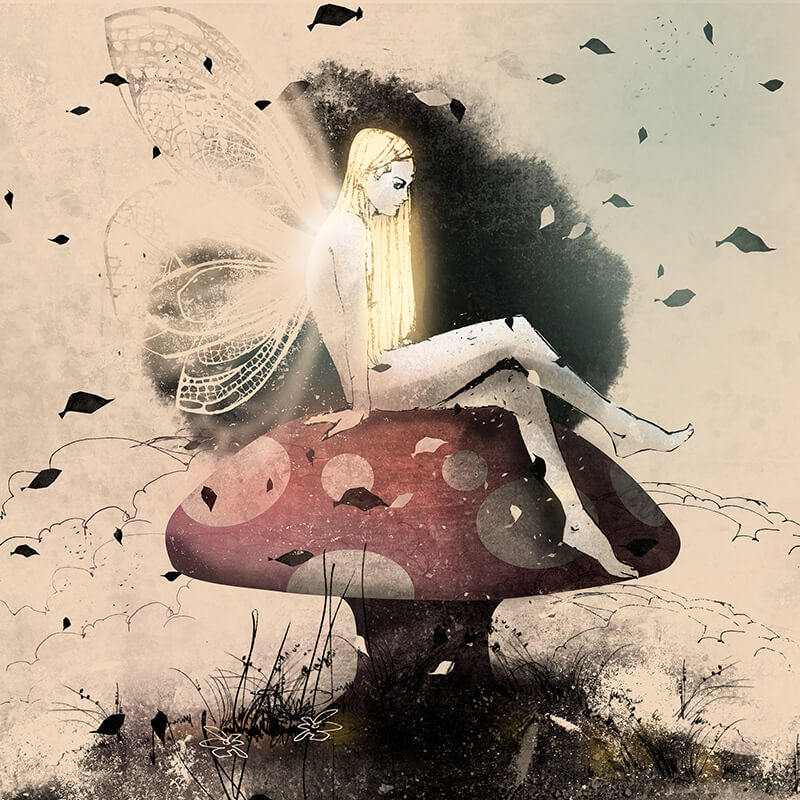

Drew Fiddy
Artist & Illustrator
- 
About
My art is a journey, a mystical adventure into the wondrous and beautiful elements of the natural world, combined with the surrealism that goes unseen by most eyes on a daily basis.
I was born and raised in the vast rural plains of New Zealand. With mountain vistas on the horizon, the silent mystical strength of nature has always humbled me. I try to infuse those feelings into my artwork wherever I can.
Moving to the UK, I graduated with an honours degree in Illustration and Communication Design and have worked in the creative industries for clients including Porsche, BMW, Swatch and Games Workshop amongst others. Currently I am working as a Design Lead in the Virtual Reality industry. I have exhibited my work in various galleries, including at the Tolkien Society's annual event in Oxford.
The imagery I create is a fusion of multiple mediums; photography, pen and ink, oil paint, hand-drawn sketches, textures and found objects; most often composed using digital techniques. My background in creative technology allows me to combine the very latest techniques with traditional hand-crafted skills to create unique stories and windows into other worlds.
I am available for commission, exhibits or creative collaborations.
Please contact me for Limited numbered prints. Some selected artworks can be found for sale here also.
Contact me
info@drewfiddy.co.uk